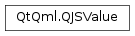

QJSValue¶
Synopsis¶
Functions¶
- def
call([args=QJSValueList()]) - def
callAsConstructor([args=QJSValueList()]) - def
callWithInstance(instance[, args=QJSValueList()]) - def
deleteProperty(name) - def
engine() - def
equals(other) - def
hasOwnProperty(name) - def
hasProperty(name) - def
isArray() - def
isBool() - def
isCallable() - def
isDate() - def
isError() - def
isNull() - def
isNumber() - def
isObject() - def
isQMetaObject() - def
isQObject() - def
isRegExp() - def
isString() - def
isUndefined() - def
isVariant() - def
property(arrayIndex) - def
property(name) - def
prototype() - def
setProperty(arrayIndex, value) - def
setProperty(name, value) - def
setPrototype(prototype) - def
strictlyEquals(other) - def
toBool() - def
toDateTime() - def
toInt() - def
toNumber() - def
toQMetaObject() - def
toQObject() - def
toString() - def
toUInt() - def
toVariant()
Detailed Description¶
-
class
PySide2.QtQml.QJSValue([value=UndefinedValue])¶ -
class
PySide2.QtQml.QJSValue(value) -
class
PySide2.QtQml.QJSValue(other) -
class
PySide2.QtQml.QJSValue(value) -
class
PySide2.QtQml.QJSValue(str) -
class
PySide2.QtQml.QJSValue(value) -
class
PySide2.QtQml.QJSValue(value) -
class
PySide2.QtQml.QJSValue(value) Parameters: - value –
PySide2.QtQml.QJSValue.SpecialValue - other –
PySide2.QtQml.QJSValue - str – str
- value –
-
PySide2.QtQml.QJSValue.SpecialValue¶
-
PySide2.QtQml.QJSValue.call([args=QJSValueList()])¶ Parameters: args – Return type: PySide2.QtQml.QJSValue
-
PySide2.QtQml.QJSValue.callAsConstructor([args=QJSValueList()])¶ Parameters: args – Return type: PySide2.QtQml.QJSValue
-
PySide2.QtQml.QJSValue.callWithInstance(instance[, args=QJSValueList()])¶ Parameters: - instance –
PySide2.QtQml.QJSValue - args –
Return type: - instance –
-
PySide2.QtQml.QJSValue.deleteProperty(name)¶ Parameters: name – unicode Return type: PySide2.QtCore.bool
-
PySide2.QtQml.QJSValue.engine()¶ Return type: PySide2.QtQml.QJSEngine
-
PySide2.QtQml.QJSValue.equals(other)¶ Parameters: other – PySide2.QtQml.QJSValueReturn type: PySide2.QtCore.bool
-
PySide2.QtQml.QJSValue.hasOwnProperty(name)¶ Parameters: name – unicode Return type: PySide2.QtCore.bool
-
PySide2.QtQml.QJSValue.hasProperty(name)¶ Parameters: name – unicode Return type: PySide2.QtCore.bool
-
PySide2.QtQml.QJSValue.isArray()¶ Return type: PySide2.QtCore.bool
-
PySide2.QtQml.QJSValue.isBool()¶ Return type: PySide2.QtCore.bool
-
PySide2.QtQml.QJSValue.isCallable()¶ Return type: PySide2.QtCore.bool
-
PySide2.QtQml.QJSValue.isDate()¶ Return type: PySide2.QtCore.bool
-
PySide2.QtQml.QJSValue.isError()¶ Return type: PySide2.QtCore.bool
-
PySide2.QtQml.QJSValue.isNull()¶ Return type: PySide2.QtCore.bool
-
PySide2.QtQml.QJSValue.isNumber()¶ Return type: PySide2.QtCore.bool
-
PySide2.QtQml.QJSValue.isObject()¶ Return type: PySide2.QtCore.bool
-
PySide2.QtQml.QJSValue.isQMetaObject()¶ Return type: PySide2.QtCore.bool
-
PySide2.QtQml.QJSValue.isQObject()¶ Return type: PySide2.QtCore.bool
-
PySide2.QtQml.QJSValue.isRegExp()¶ Return type: PySide2.QtCore.bool
-
PySide2.QtQml.QJSValue.isString()¶ Return type: PySide2.QtCore.bool
-
PySide2.QtQml.QJSValue.isUndefined()¶ Return type: PySide2.QtCore.bool
-
PySide2.QtQml.QJSValue.isVariant()¶ Return type: PySide2.QtCore.bool
-
PySide2.QtQml.QJSValue.property(arrayIndex)¶ Parameters: arrayIndex – PySide2.QtCore.quint32Return type: PySide2.QtQml.QJSValue
-
PySide2.QtQml.QJSValue.property(name) Parameters: name – unicode Return type: PySide2.QtQml.QJSValue
-
PySide2.QtQml.QJSValue.prototype()¶ Return type: PySide2.QtQml.QJSValue
-
PySide2.QtQml.QJSValue.setProperty(arrayIndex, value)¶ Parameters: - arrayIndex –
PySide2.QtCore.quint32 - value –
PySide2.QtQml.QJSValue
- arrayIndex –
-
PySide2.QtQml.QJSValue.setProperty(name, value) Parameters: - name – unicode
- value –
PySide2.QtQml.QJSValue
-
PySide2.QtQml.QJSValue.setPrototype(prototype)¶ Parameters: prototype – PySide2.QtQml.QJSValue
-
PySide2.QtQml.QJSValue.strictlyEquals(other)¶ Parameters: other – PySide2.QtQml.QJSValueReturn type: PySide2.QtCore.bool
-
PySide2.QtQml.QJSValue.toBool()¶ Return type: PySide2.QtCore.bool
-
PySide2.QtQml.QJSValue.toDateTime()¶ Return type: PySide2.QtCore.QDateTime
-
PySide2.QtQml.QJSValue.toInt()¶ Return type: PySide2.QtCore.qint32
-
PySide2.QtQml.QJSValue.toNumber()¶ Return type: PySide2.QtCore.double
-
PySide2.QtQml.QJSValue.toQMetaObject()¶ Return type: PySide2.QtCore.QMetaObject
-
PySide2.QtQml.QJSValue.toQObject()¶ Return type: PySide2.QtCore.QObject
-
PySide2.QtQml.QJSValue.toString()¶ Return type: unicode
-
PySide2.QtQml.QJSValue.toUInt()¶ Return type: PySide2.QtCore.quint32
© 2018 The Qt Company Ltd. Documentation contributions included herein are the copyrights of their respective owners. The documentation provided herein is licensed under the terms of the GNU Free Documentation License version 1.3 as published by the Free Software Foundation. Qt and respective logos are trademarks of The Qt Company Ltd. in Finland and/or other countries worldwide. All other trademarks are property of their respective owners.